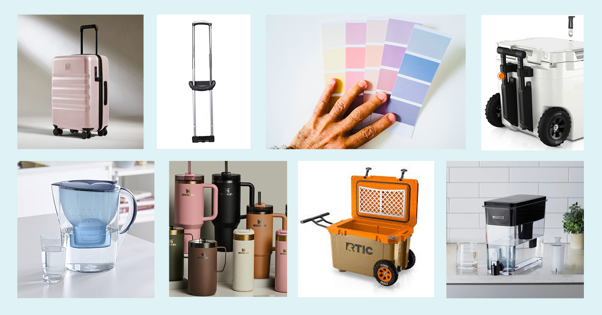

02 — Research & Market Analysis
The gap nobody filled.
The gap nobody filled.
Portable and filtered.
Mapping the existing market revealed a clear opportunity. Portable solutions lacked filtration. Filtered solutions were stationary and bulky. Nothing sat in the top-left — portable and technologically capable. That was the target.

Competitive landscape — portability vs. technology. Gap identified: portable + filtered.

Inspiration — rolling luggage, portable coolers, Stanley colour culture, pastel consumer trends